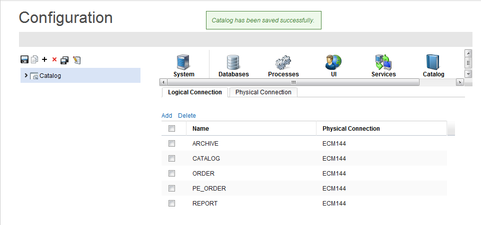
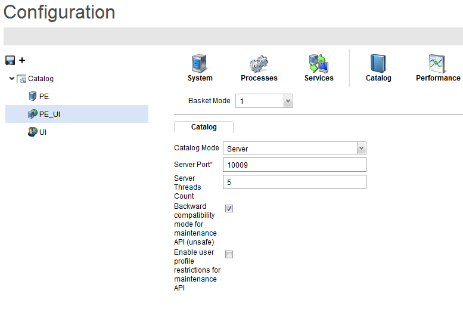

Configuration - Catalog Parameters
Once Velocity Studio is properly configured and installed, and a database initialization is done (refer to the Velocity Studio Installer User Guide for more details), you can initiate the catalog configuration process. This process contains the following steps:
- Run the Velocity Studio project
- Start the System Configuration application
- Configure logical connections
- Configure catalog node
Run the Velocity Studio Project
To run the project, click the Runtime > Run button from the menu bar. The Velocity Studio runs in the configuration mode. See Velocity Studio User Guide > Velocity Studio Menu Actions > Runtime > Run for more details.
Start the System Configuration Application
In your Web browser, access the System Configuration application by entering http://localhost:8080/cwf/configApp as the URL.
Enter upadmin as both your Username and Password, and then press the Enter key. The main screen of configuration application displays
Configure Logical Connections
In the catalog configuration process, you must configure the logical connections. The following step describes how to configure the logical connection and database settings:
- Select the main node (for example, Catalog) from the node menu section, and then click the Database tab.
- Clicking Databases > Logical Connection displays the logical connections to the database, which are responsible for enabling the AVM to send database commands to the database, to carry out different functionalities.
- Clicking Databases > Physical Connection displays the physical connections to the database, which are responsible for defining database connection parameters to be used by logical connections.
- To add a physical connection, complete these steps:
- From the Physical Connection page, click the Add button.
- The New Physical Connection dialog appears. Enter the database credentials; when you have finished, click the Apply button. A message appears, indicating that you have successfully updated your Oracle thin connection.
- To test your connection settings, click the Test button. If your connection settings are properly set up, a confirmation message appears.
Note: The database attributes in the System Configuration application need to match the database attributes in the Velocity Studio. For more information, refer to the System Configuration User Guide.
- Click the Logical Connection tab to associate your logical connections to the physical connection you have just created, double-click each of the following logical connections and select your newly created physical connection from the drop-down list:
- ARCHIVE
- CATALOG
- ORDER
- PE_ORDER
- REPORT

- Click the Save button to save your configuration settings; a confirmation message appears that the catalog has been saved successfully.
Configure Catalog Node
To create a new node for catalog, follow these steps:
- Expand the main cluster node (for example, Catalog) from the node menu section.
- Click the PE_UI node and click the Catalog tab.
- Configure the catalog parameters; the following table describes the fields available:
| Field |
Description |
| Catalog mode |
This drop-down list contains two values Server or Client. This parameter determines the type of catalog implementation or communication either server-side or client-side. Select Server to configure catalog.
Note: When using http://localhost:port/cwf/catalogMain to access the Catalog application, it is recommended that this Web address be load-balanced (routed) to either a UI server or Catalog server, and not a catalog client. Additionally, if you use http://localhost:port/cwf/ to log in and then select Catalog Designer from the Application selection page, this Web address may be load-balanced (routed) to a UI or catalog client. |
| Catalog server port |
This parameter is used when the Catalog mode is Server. This parameter determines the maximum number of threads that the catalog server uses to handle requests from catalog client nodes. It defines the largest number of client requests that can be concurrently processed by the catalog server (for example, 10009). |
| Server thread pool size |
This parameter is used when the Catalog mode is Client. This parameter determines the maximum number of concurrent connections that the catalog client node can make to the catalog server. |
- Click the System tab of the PE_UI Node, and click the Active Configuration check box to make this node active. This configuration is used by a runtime instance.

- Click the Save button to save the settings.
- Exit the System configuration application and go back to the Velociy Studio.
Note: You can create new nodes for PE, PE_UI, or UI nodes. For more information see System Configuration User Guide > Getting Started >System Configuration User Interface. |